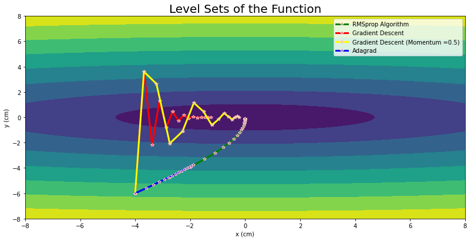
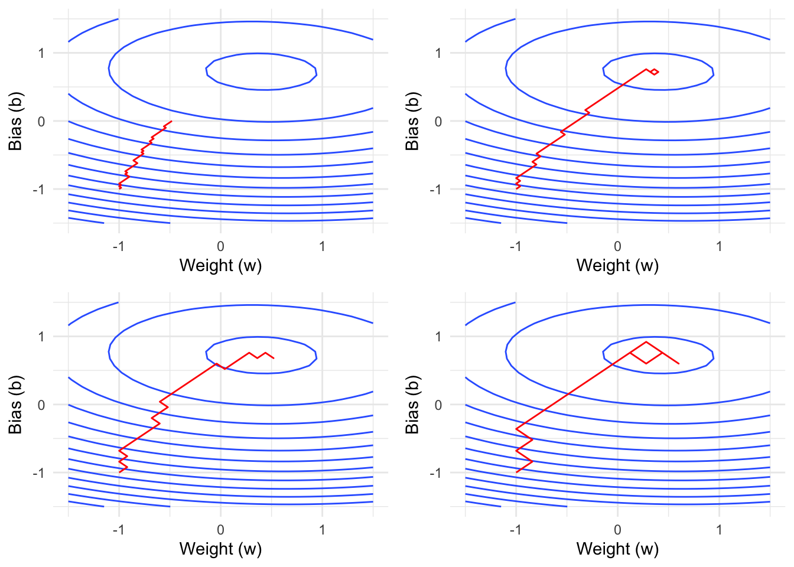
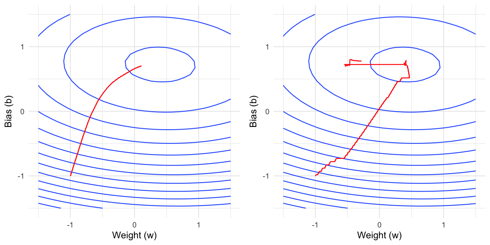
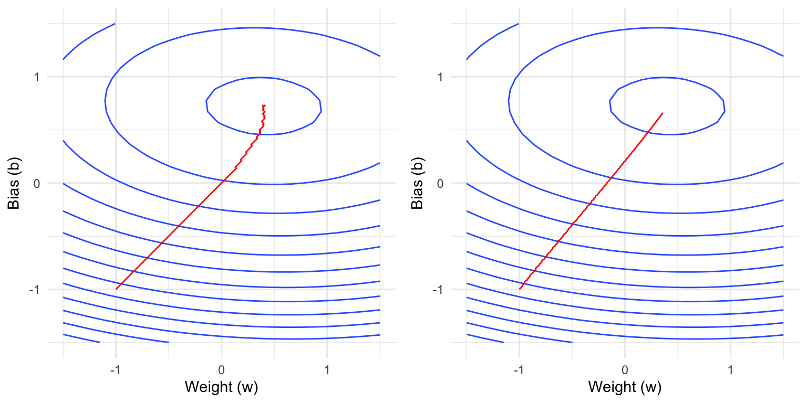

library(torch)
model = nn_linear(1, 1)
# Create optimizer
opt <- optim_adamw(model$parameters, lr = 0.2)Optimizers
Introduction to Optimizers
In this notebook we will cover the main ideas of common optimizers used in deep learning, as well as how to use them in torch.
TODO: Cite Papers for the optimizers
Optimizers are algorithms that adjust the parameters of a neural network to minimize the loss function during training.
The general update formula for parameter \(w\) is given by:
\[w_{t+1} = w_t - \eta \frac{\partial L}{\partial w_t}\]
\(w_t\) is the current value of the \(i\)-th parameter (like a weight or bias) at time step \(t\)
\(w_{t+1}\) is the new value of the parameter after the update
\(\eta\) (eta) is the learning rate, which controls how big of a step we take
\(\frac{\partial L}{\partial w_t}\) is the partial derivative of the loss function L with respect to parameter a, i.e., the gradient
The optimizers used in practice differ from the above formula, as:
- The gradient is estimated from a mini-batch and not the whole dataset
- The simplistic update formula from above is extended with:
- Weight decay
- Momentum
- Adaptive learning rates
The state of the art optimization method in Deep Learning is AdamW, which is an improvement over Adam.
Mini-batch Effects in SGD
When using mini-batches, the gradient becomes a noisy estimate of the true gradient over the full dataset:
\[\nabla L_{\text{batch}} = \frac{1}{|B|} \sum_{i \in B} \nabla L_i\]
where \(B\) is the mini-batch of samples and \(|B|\) is the batch size. This introduces several important effects:
- Noise as Regularization: The noise in gradient estimates can help escape local minima and saddle points, acting as an implicit regularizer
- Trade-offs with Batch Size:
- Larger batches provide more accurate gradient estimates
- Smaller batches introduce more noise but allow more frequent parameter updates
Weight Decay
Because weight decay in optimizers is equivalent to regularization, we first need to understand the latter: Regularization in machine learning/statistics is used to prevent overfitting by adding a penalty term to the model’s loss function, which discourages overly complex models that might fit noise in the training data. It helps improve generalization to unseen data. For example, in ridge regression, the regularization term penalizes large coefficients by adding the squared magnitude of the coefficients to the loss function:
\[ \mathcal{L}(y, \hat{y}) = \sum_{i=1}^n \left(y_i - \hat{y}_i\right)^2 + \lambda \sum_{j=1}^p \beta_j^2 \]
Here, \(\lambda\) controls the strength of the regularization, \(y_i\) are the observed values, \(\hat{y}_i\) are the predicted values, and \(w_i\) are the model coefficients.
If we integrate weight decay into the gradient update formula, we get the following:
\[w_{t+1} = w_t - \eta \big(\frac{\partial L}{\partial w_t} - \lambda w_t\big)\]
This formula shows that the weight decay term (\(- \lambda w_t\)) effectively shrinks the weights during each update, helping to prevent overfitting.

Momentum
Momentum is a technique that helps accelerate gradient descent by using an exponential moving average of past gradients. Like a ball rolling down a hill, momentum helps the optimizer:
- Move faster through areas of consistent gradient direction
- Push through local minima and saddle points
- Dampen oscillations in areas where the gradient frequently changes direction
The exponential moving momentum update can be expressed mathematically as:
\[m_t = \beta m_{t-1} + (1-\beta)\nabla_w L(w_t)\] \[w_{t+1} = w_t - \eta \frac{m_t}{1 - \beta^t}\]
where \(\beta\) is the momentum decay rate (typically 0.9), \(m_t\) is the exponential moving average of gradients, and \(\eta\) is the learning rate. Note that dividing by \(1 - \beta^t\) counteracts a bias because \(m_0\) is initialized to \(0\).

Adaptive Learning Rates
Adaptive learning rate methods automatically adjust the learning rate for each parameter during training. This is particularly useful because:
- Different parameters may require different learning rates - some parameters might need large updates while others need fine-tuning
- The optimal learning rate often changes during training - larger steps might be beneficial early on, while smaller steps are needed for fine-tuning later
- The gradient magnitude can vary significantly across different layers of deep networks
The basic idea can be expressed mathematically as:
\[w_{t+1} = w_t - \eta_t \frac{\partial L}{\partial w_t}\]
where \(\eta_t\) is a parameter-specific learning rate that adapts over time based on the optimization history.
In AdamW, the adaptive learning rate is primarily controlled by the second moment estimate (squared gradients):
\[v_t = \beta_2 v_{t-1} + (1-\beta_2)(g_t)^2\] \[\hat{\eta}_t = \eta \frac{1}{\sqrt{v_t + \epsilon}}\]
where:
- \(v_t\) is the exponential moving average of squared gradients
- \(\beta_2\) is the decay rate (typically 0.999)
- \(g_t\) is the current gradient
- \(\epsilon\) is a small constant for numerical stability
This adaptive scaling helps:
- Automatically decrease step sizes for parameters with large or noisy gradients
- Increase step sizes for parameters with small, consistent gradients
- Improve training stability without manual learning rate tuning

Optimizers in torch
torch provides several common optimizers, including SGD, Adam, AdamW, RMSprop, and Adagrad. The main optimizer API consists of:
- Initializing the optimizer, which requires passing the parameters of the module to be optimized and setting the optimizer’s hyperparameters such as the learning rate.
step(): Update parameters using current gradientszero_grad(): Reset gradients of all the parameters to zero before each backward pass- Just like
nn_modules they have a$state_dict()which can e.g. be saved to later load it using$load_state_dict().
The standard way to create
To illustrate the optimizer, we will again generate some synthetic training data:
torch_manual_seed(1)
X = torch_randn(1000, 1)
beta = torch_randn(1, 1)
Y = X$matmul(beta) + torch_randn(1000)We can perform a single gradient $step() using the AdamW optimizer from above:
loss = mean((model(X) - Y)^2)
loss$backward()
opt$step()NULLNote that even after the optimizer step, the gradients are not reset to zero.
model$weight$gradtorch_tensor
0.3670
[ CPUFloatType{1,1} ]We can conveniently set all gradients of the parameters managed by the optimizer to zero using $zero_grad():
opt$zero_grad()
model$weight$gradtorch_tensor
0
[ CPUFloatType{1,1} ]Visualizing AdamW Parameters
TODO: I should add some questions here
Parameter 1
Note
Question: Which parameter is varied below?
Click for answer
The learning rate is varied.
Parameter 2
Note
Question: Which parameter is varied below?
Click for answer
The weight decay is varied.
Parameter 3
Note
Question: Which parameter is varied below? Can you explain why this happens?
Click for answer
The momentum parameter \(\beta_1\) is varied. When it is set suboptimally as in this example, it can jump out of the local optimum again. Still, we observe that in the beginning of the optimization process, velocity in the direction of the optimum is higher.
Parameter 4
Note
Question: Which parameter is varied below?
Click for answer
The \(\beta_2\) parameter is varied.
Saving an Optimizer
In order to resume training at a later stage, we can save the optimizer’s state using $state_dict().
state_dict = opt$state_dict()This state dictionary contains:
- The
$param_groupswhich contains the parameters and their associated hyperparameters - The
$statewhich contains the optimizer’s internal state, such as the momentum and second moment estimates
state_dict$param_groups[[1L]]$params
[1] 1 2
$lr
[1] 0.2
$betas
[1] 0.900 0.999
$eps
[1] 1e-08
$weight_decay
[1] 0.01
$amsgrad
[1] FALSE
Note
It is possible to set different parameters (such as learning rate) for different parameter groups.
o2 = optim_adamw(list(
list(params = torch_tensor(1), lr = 1),
list(params = torch_tensor(2), lr = 2)
))
o2$param_groups[[1L]]$lr[1] 1o2$param_groups[[2L]]$lr[1] 2The $state field contains the state for each parameter:
state_dict$state[[1]]$exp_avgtorch_tensor
0.01 *
3.6697
[ CPUFloatType{1,1} ]state_dict$state[[2]]$exp_avgtorch_tensor
0.1495
[ CPUFloatType{1} ]